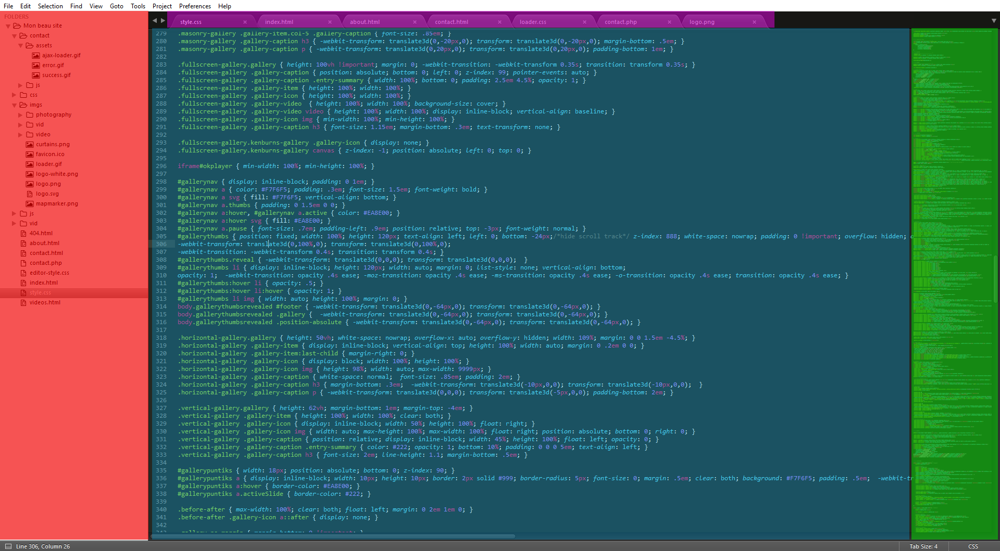

Sublime Text


La partie en rouge affiche l'arborescence de votre projet. Elle ne s'ouvre que lorsque vous importez un dossier complet
La partie centrale en bleu affiche votre code
La partie en verte à droite affiche votre code en général.
Enfin la partie en haut, en violet, indique les différents fichiers que vous avez ouvert sous forme d'onglets.